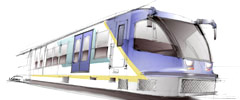
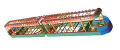
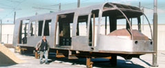

|
Ýstanbul
Büyükþehir Belediyesi'ne baðlý kuruluþlardan biri olan Ýstanbul
Ulaþým A.Þ. tamamen kendi imkanlarý, birikimleri ve üniversitelerden
aldýðý bilimsel destekle projesi tamamen yerli olan modern
bir prototip tramvay aracý imal etmiþtir. Bu aracýnýn maliyet
olarak ise %60'ý yerlidir.

Ýstanbul'da
Metro ve Tramvay hatlarýnýn iþletmeciliðini yapan Ýstanbul
Ulaþým A.Þ., Tramvay araçlarýnýn bakým ve onarýmý için gerekli
yedek parçalarýn yurtdýþýndan çok yüksek fiyatlarla alýndýðýný
gördükten sonra bunlarýn yerli piyasada yaptýrýlmasý için
baþlattýðý çalýþmalar sonucunda bin'e yakýn yedek parçayý
yerli olarak çok düþük fiyatlarla yaptýrmayý baþarmýþtý.
Yapýlan
ön araþtýrmalar sonucunda tramvay aracýnýn toplam bedelinin
yaklaþýk %60'ýnýn gövde, iç ve dýþ giydirme, montaj ve testler
gibi yerli olarak gayet kolayca yapýlabilecek kalemlerden
oluþtuðu görüldü.
Bu
çalýþmalardan edinilen tecrübeler ýþýðýnda yerli tramvay üretimi
için ilk proje çalýþmalarýna 1998 yýlýnda baþlanarak bu konu
için üniversitelerle sýký bir iþbirliðine giriþildi.
ENDÜSTRÝYEL
TASARIM:
Ýlk olarak aracýn modern bir görünüme sahip olmasýný saðlamak
için Marmara Üniversitesi'ne Endüstriyel tasarým projesi yaptýrýldý.
Aracýn dýþ görünümünün yurtdýþýndaki örneklerinde de olduðu
gibi son yýllarda oldukça raðbet gören yuvarlatýlmýþ hatlara
sahip olmasý benimsendi. Ýç görünüm için ise sadelik ve fonksiyonellik
ön plana çýktý.
BÝLGÝSAYAR
TEKNOLOJÝSÝNÝN EN SON ÝMKANLARI KULLANILDI:
Bu analizlerin yapýmýnda bilgisayar teknolojisinin sahip olduðu
en geliþmiþ imkanlar kullanýlmýþ ve sonlu elemanlar metodu
ile bütün analizler gerçekleþtirilmiþtir. Aracýn endüstriyel
tasarýmýndan koltuk yerleþimine, kablo döþenmesine kadar her
safhada bilgisayar destekli tasarýmlar için hazýrlanmýþ paket
programlardan faydalanýlmýþtýr. Araç gövdesi yaklaþýk 24000
küçük elemana bölünerek yapýlan bu çalýþmalarda aþaðýdaki
analizler yapýlmýþtýr:
- Statik
analizler
- Dinamik
analizler
- Aerodinamik
direnç analizi
- Titreþim
analizi
- Çarpýþma
testleri
Yapýlan bütün bu analiz sonuçlarýna göre araç gövdesinin projelerinde
gerekli tadilatlar yapýlmýþ ve bu analizler tekrar yapýlmýþtýr.
Bu iþlemler bir kaç kez tekrar edildikten sonra en hafif yapýyý
ve gerekli mukavemeti saðlayacak þekilde araç gövdesinin projeleri
tamamlanmýþtýr.
Bu projede 3D tasarým için CATIA V5, sonlu elemanlar analizi
(FEA) için ise ANSYS yazýlýmlarý kullanýlmýþtýr.
ULUSLARARASI
STANDARTLARA UYGUNLUK:
Aracýn gövde projelerinin yapýmý ve buna ait analizlerin gerçekleþtirilmesi
esnasýnda yolcu emniyeti ve çarpýþma için gerekli bütün uluslararasý
standartlarýn öngördüðü deðerler gözönünde bulunduruldu.
Daha sonra numune araç gövdesinin projeye uygun olarak yapýmýna
baþlanmýþ ve bu esnada aracýn kablo aðý projeleri bilgisayarda
hazýrlanmýþtýr. Araç içine haberleþme ve enerji kablosu olarak
yaklaþýk 100 deðiþik tipte 10 km. kablo döþendi.
Daha sonra aracýn bogi, elektrik kontrol sistemleri vs. gibi
ana komponentleri için mevcut yedek parçalar kullanýldý. Bu
esnada aracýn bilgisayar kontrollü kumanda sistemi için ayrý
bir proje çalýþmasý Ýstanbul Teknik Üniversitesi'nde baþlandý.
ARACIN
TEMEL ÖZELLÝKLERÝ:
- Gerektiðinde
metro aracý olarak kullanýlabilmesi için ve aðýr yolcu yüküne
dayanabilmesi için gerekli yapýsal mukavemete sahip olma
- Yuvarlatýlmýþ
hatlara sahip modern bir görünüþ
- Paslanmaz
çelik gövde
- Klima
- 25
mt boy ve 2.65 mt geniþlik
- Alternatif
akýmla beslenen modern tahrik sistemi
- Geniþ
camlar ve aydýnlýk iç mekan vs.
- Keskin
dönüþleri yapabilecek körüklü gövde
- En
az 40 yýllýk ömür
HEDEF
2010 YILINDA 1000 ADET ARACIN YERLÝ OLARAK ÜRETÝLMESÝ:
Ýstanbul için önümüzdeki 10 yýlda ihtiyaç duyulan yaklaþýk
1000 adet aracýn Ýstanbul Ulaþým A.Þ.'nin denetiminde yerli
olarak yaptýrýlmasý düþünülmektedir.
Yurtdýþýndan
temin edilen bir aracýn maliyetinin yaklaþýk 1.5 Milyon dolar
olduðu ve yerli olarak üretilmesi durumunda bu maliyetin 750.000
Dolara hatta 600.000 Dolara indirilebileceði yapýlan araþtýrmalar
sonucunda görülmüþtür.
Gerçekleþtirilmiþ
olan bu araç projesi sayesinde Ýstanbul dýþýndaki þehirler
için de maliyeti düþük Tramvay araçlarýna sahip olma imkaný
getirilmiþ oluyor. Ayný zamanda uluslararasý piyasa da bile
bu araçlarýn rekabet þansýnýn olacaðý düþünülmektedir.
ÜRETÝM
DEVAM EDÝYOR:
2001 yýlýnda imalatý büyük oranda tamamlanan 4 adet tramvay
aracýnýn, bu yýl devreye alýnma iþlemleri gerçekleþtirilecek.
Mevcut yüksek platformlu aracýmýza ilave olarak,düþük platformlu
bir cadde tramvayý tasarlanacak ve 2003 yýlýnda 2 adet prototip
düþük platformlu ile 12 adet daha yüksek platformlu tramvay
aracý imal edilecektir.
Not:
Daha fazla bilgi www.istanbul-ulasim.com.tr/rte.htm
sayfasýndan bulunabilir.
Ýlgili Haber > Tramvay yerli vagon imalatý ile büyüyecek:
Üç yýldýr deneme seferi yapan RTE 2000 adlý tramvay vagonunun
seri imalatýna baþlanýyor. Ýthal vagonun üçte bir fiyatýna imal
edilen yerli vagonlardan ilk 5'i yaz aylarýnda sefere alýnacak.
Ýstanbul
Büyükþehir Belediyesi'nin þirketlerinden Ýstanbul Ulaþým A.Þ.
tarafýndan Raylý Taþýma Ekipmanlarý "RTE 2000" adýyla üretilen
ve 1999'da deneme seferlerine baþlayan ilk yerli tramvayýn
seri imalat çalýþmalarý baþladý.
Ýstanbul
Ulaþým A.Þ. Genel Müdürü Abdurrahman Gündoðdu, yaptýðý açýklamada,
þirketleri tarafýndan üretilen ve 3 yýldan beri test çalýþmalarý
devam eden yerli tramvay vagonunda beklenin dýþýnda bir aksaklýk
olmadýðýný söyledi.
Yeni
vagon projelerinin test sonuçlarýna göre yenilendiðini ifade
eden Gündoðdu, þunlarý söyledi: "Ürettiðimiz tramvayýn proje
çalýþmasýný tamamladýk. Seri imalat çalýþmalarýna baþlandý.
Þu anda 5 vagonun gövdesini özel sektöre yaptýrýyoruz. 78
firmadan teklif aldýk. En ucuz teklifi veren Adapazarý'nda
Demireller Makine Tekstil Sanayi ve Ticaret A.Þ. (DMS) firmasý,
yurtdýþýndan alacaðýmýz gövde fiyatýnýn beþte birine vagon
üretecek. Çelik aksamýný Ýstanbul'da bir firma yapacak. Elektrik
ve bilgisayar kontrol ekipmanlarýný Almanya ve Hollanda'dan
getirttik. Bu yaz 5 vagon Ýstanbullularýn hizmetinde olacak.
Daha sonra seri bir þekilde ihtiyaçlarý karþýlayacaðýz. Amacýmýz
yurtdýþýndan tekrar tramvay almamak." Gündoðdu, yurtdýþýnda
tanesi 1,5 milyon dolar olan bir vagonun kendilerine maliyetinin
500 bin dolar olduðunu belirterek, "Bir vagonu üçte bire mal
ettik." dedi. Üretilen tramvaylarýn düþük tabanlý, klimalý
olacaðýný ve Eminönü-Zeytinburnu arasýndaki tramvay hattýnda
çalýþacaðýný ifade eden Gündoðdu, bu hatta çalýþan mevcut
vagonlarýn da zamanla hafif metro hattýna kaydýrýlacaðýný
söyledi. Gündoðdu, yurtdýþýndan gelecek 55 yeni vagon ile
birlikte tramvaylarýn 2 dakikada bir sefer yapacaðýný ve vagon
boylarýnýn daha uzun olmasý nedeniyle de kapasitenin yüzde
50 artacaðýný kaydetti.
Abdurrahman
Gündoðdu, "Bu hizmetlerin devreye girmesiyle insanlar daha
rahat ulaþým imkanýna kavuþmuþ olacak." dedi.
Ýstanbul, aa
16.01.2002 |